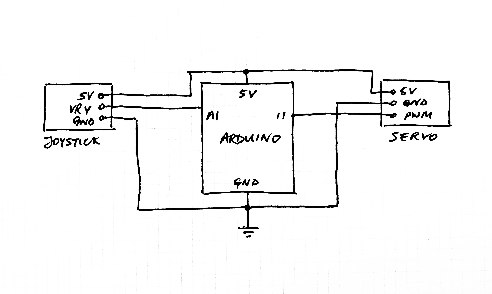
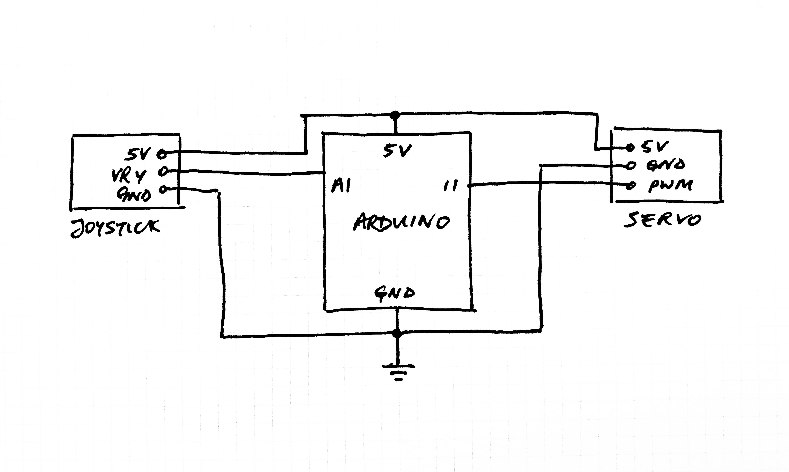
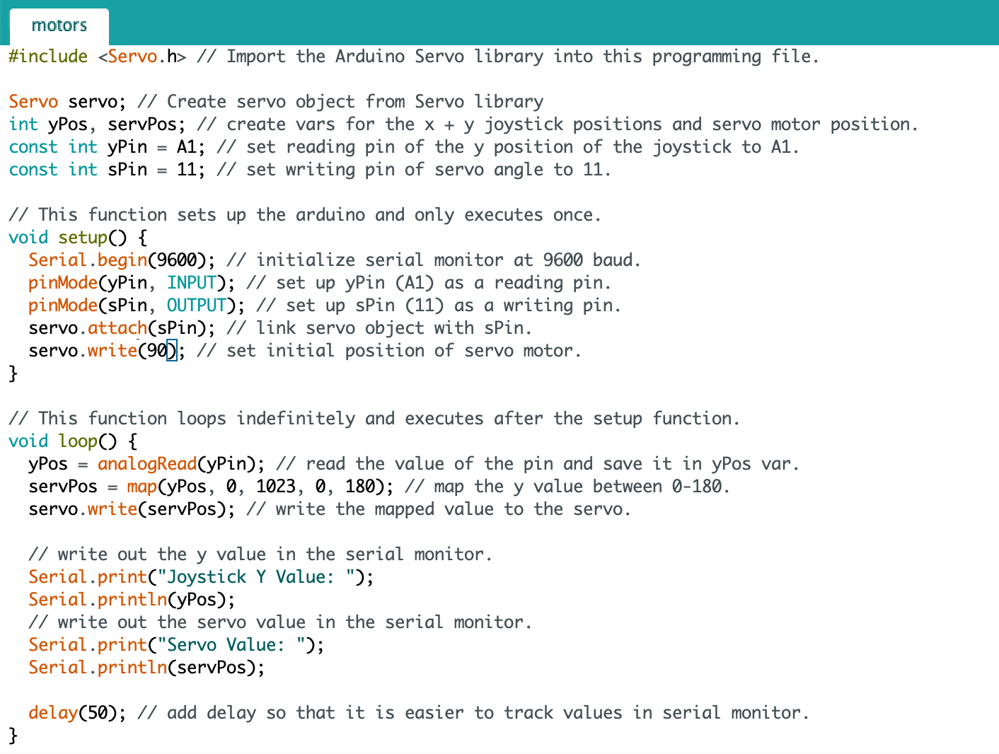
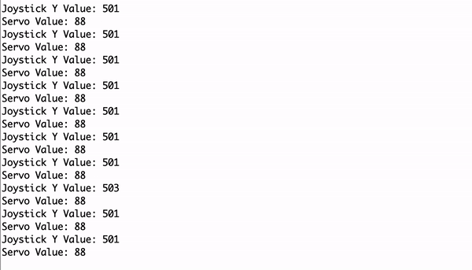
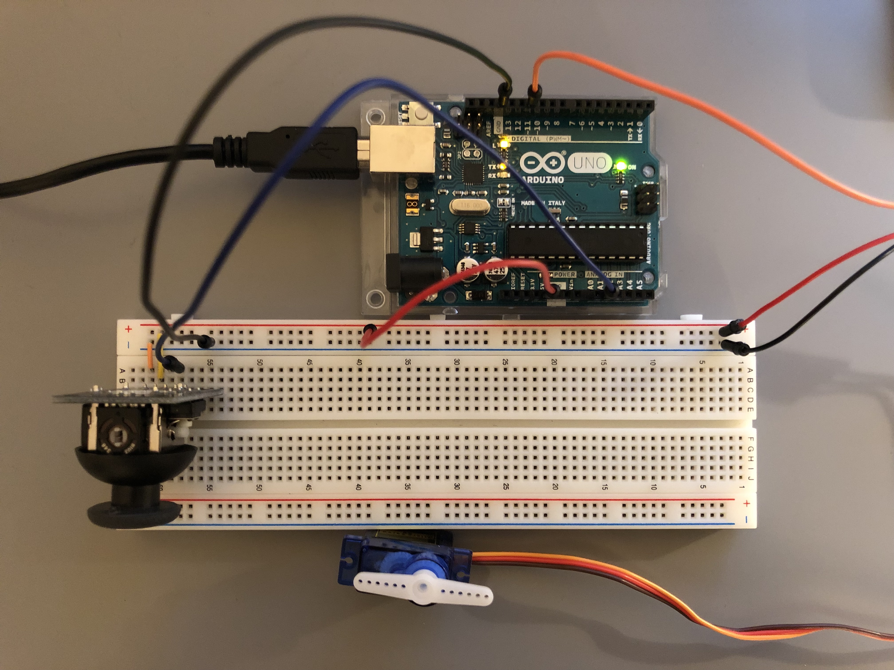

Schematic

In this circuit, the joystick and servo are connected to the 5V supply and ground of the arduino. The joystick y position value is sent to A1 pin and the servo PWM signal is connected to pin 11.
Prompt: Create a circuit that utilizes an input device to control a motor.

For this assignment, I implemented a circuit that controls the angle of the servo motor using a joystick.
Schematic

In this circuit, the joystick and servo are connected to the 5V supply and ground of the arduino. The joystick y position value is sent to A1 pin and the servo PWM signal is connected to pin 11.
Arduino .ino File

Serial Monitor

The range of input values coming from the joystick y value determined using the serial monitor. The value is then mapped to a servo value between 0 and 180 which is also printed in the serial monitor.
Circuit
